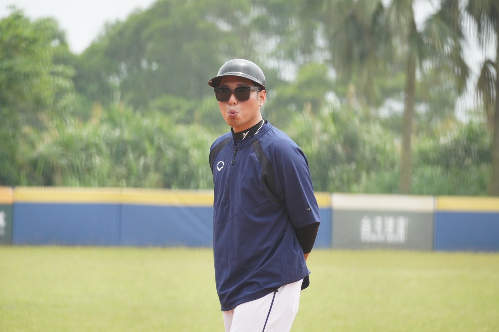
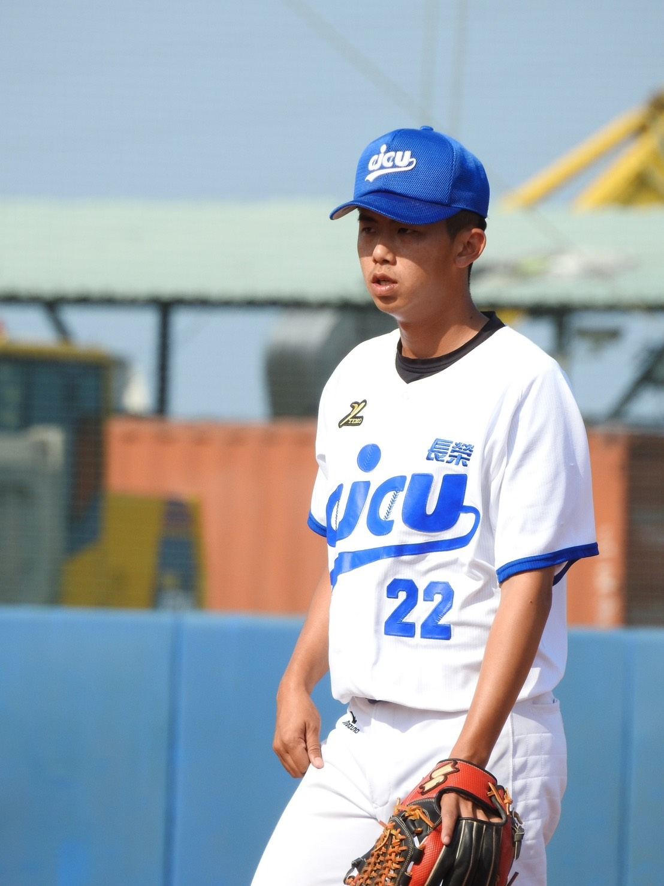
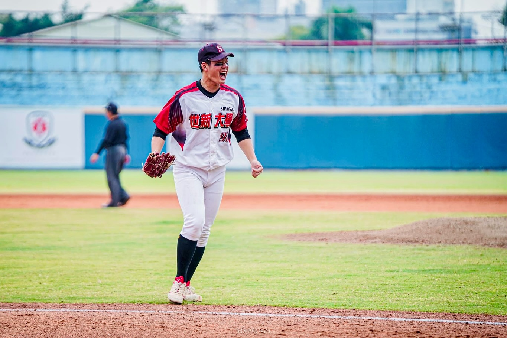
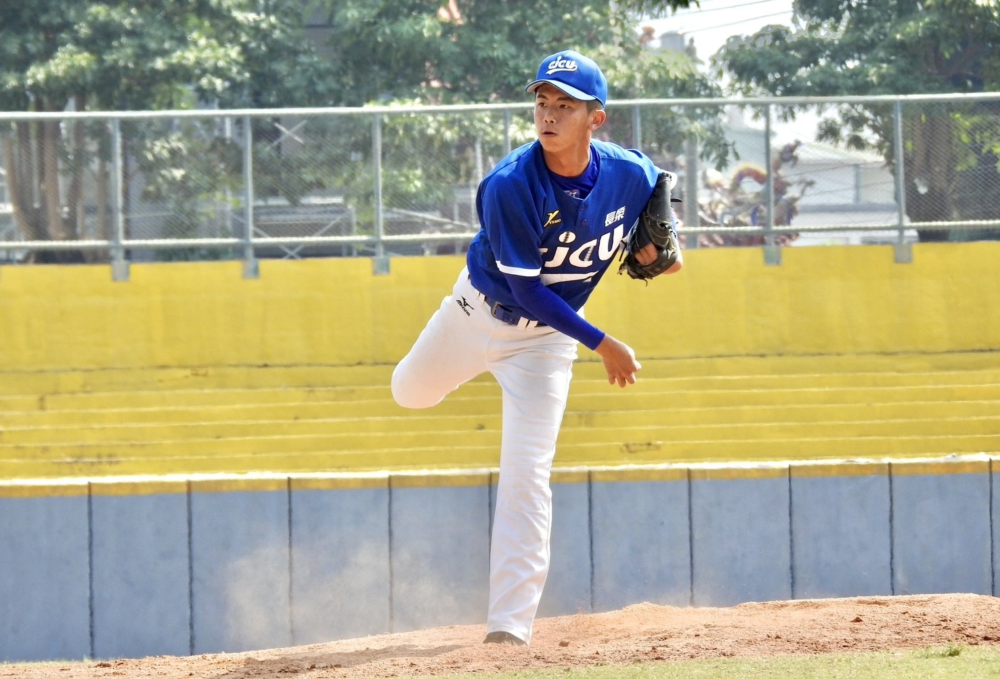
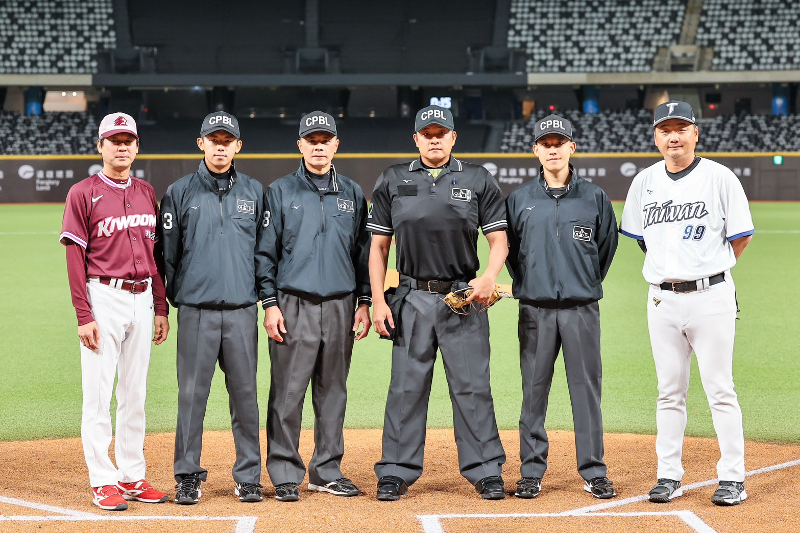

鳳凰花開，驪歌初唱，六月的微風吹過各大專院校，對於多數畢業生而言，這是一個充滿希望與未知的新起點，對學生運動員而言亦同，每位選手皆在追求他們的職棒夢。近年來隨著國際賽事以及啦啦隊旋風帶來的熱潮，台灣社會對棒球的關注度來到了歷史高點，中華職棒的平均單場觀眾人數去年達到歷史新高的10,373人，球團規模也從多年的四隊擴增到六隊。
然而在光鮮亮麗的背後，卻隱含一層一層殘酷的淘汰機制，大專棒球聯賽公開組一、二級選手人數逼近千人，甚至許多學校還有因為實力、傷病因素無法報名的選手，而每年季中選秀真正能以「大專生」身份成功披上職棒戰袍的選手，僅有寥寥十數人。
以2025年中華職棒季中選秀為例，僅有14人以大專球員身分入選，僅佔總入選球員28.6%；同時2025年僅有開南大學張林子俊一人以大專學生身分旅外發展。撇除職棒，雖然還有業餘棒球這項可以延續棒球生命的管道，不過仍舊是僧多粥少的情形，多數的大專棒球員，在褪下球衣後，必須面對一個他們陌生的社會，從小被禁錮體育班的體制內的他們，當棒球不再是職業選項，還剩下什麼？
本篇報導將透過三位處於不同階段、做出不同選擇的前大專棒球員，深入探討這群體保生在擠不進職棒窄門後，如何在這條名為「人生」的賽道上，重新尋找自己的定位。
被棒球、體制綁架的青春歲月

教練會利用課餘時間教小朋友寫功課，可是從原本不會A到Z，變成會A到Z，這跟不會有什麼差別？葉紘志，前大專棒球員，現任大學講師。
「體育班常以『兼顧品行與課業』為招生口號，但實際上呢？」現任大學講師的葉紘志，畢業於北市陽明高中，回憶起高中的體育班歲月，語氣中仍帶著無奈，他說：「教練會利用課餘時間教小朋友寫功課，可是從原本不會A到Z，變成會A到Z，這跟不會有什麼差別？」台灣的基層棒球實力在世界名列前茅，但這份榮耀的背後，往往是犧牲選手全面發展所換來的。葉紘志高中畢業典禮時，他拿著假的畢業證書道具開心拍照，直到去學務處辦理離校手續，才驚覺自己高一到高三的學分被當得一塌糊塗，根本無法畢業。當時為了拿到畢業證書，葉紘志說：「我一個一個地去拜託老師，求他們將各科暑修時間錯開，我才可以順利修習。」最終葉紘志花了三萬元的學分費，才勉強拿到畢業證書。
另一位主人翁何旻謙從小在台北長大，擁有完整四級棒球資歷，高中離鄉背井，就讀於彰化藝術高中，談到高中歲月，他說：「在教室的大部分時間都在睡覺，因為訓練真的太累了。」每天訓練時間非常冗長，下午兩點開始練球至晚上6點半，每週一、週三晚上還要進行重量訓練，同時晚上十點須統一就寢，這高強度的訓練持續了三年，上課時沒精神，老師也教得很簡單，在這樣的極端環境下，體育班的課業往往形同虛設。
抉擇，升學的十字路口

與何旻謙、葉紘志一路在傳統體育班體系成長不同，目前擔任中華職棒裁判的林柏安，棒球起步較晚，直到國中他才加入五福國中棒球隊。高中時他一度考上傳統強權南英商工，不過因為競爭過於激烈，不到一學期便決定離開，轉學至高雄的復華中學。林柏安在高中乙組表現亮眼，成功入選南聯明星隊，雖然他知道自己距離職棒有一段落差，但又不想就此放棄棒球，高中畢業之際，選擇再次挑戰甲組舞台，因期待能在一個有上場空間、相對彈性的環境中繼續表現，因而選擇長榮大學，延續棒球生涯。
葉紘志則是持續懷抱職棒夢想，選擇進入當時的強權開南大學，並勤奮苦練。不過當時的開南陣中好手如雲，在當年拿下了大專盃冠軍，葉紘志不僅完全沒有上場的機會，生活也頓失重心，大一、大二兩年除了練球，幾乎都在泡夜店與喝酒中度過。直到大二結束，葉紘志意識到不能再這樣下去，才選擇轉學到剛創隊不久的台東大學，為自己的人生重新尋找方向。

如果在木棒聯賽前如果球速沒有135公里，我就決定不要再繼續往競技運動這條路走。何旻謙，彰化藝術高中，世新大學。
當最終目標未能如願達成時，他果斷選擇了放下。許多大專公開一級的中後段科班球隊紛紛來到學校招募，並開出「公費、半公費」的誘人條件，他清楚意識到自己並非萬中選一的職棒料子，若未能成功打進職業，所學根本不足以讓他在社會上生存，他說：「當時心裡有的一股傲氣，若要繼續打球只會想去台體、國體與北市大這三所國立強權，尤其在中彰投打球的學生都會特別想進入台體；同時也有認真考慮過台東大學及高雄大學，但在徹底斷了競技體育這項念頭後，綜合考量之下，只報名以傳播領域聞名的世新大學。」
找尋第二人生及轉型陣痛
進入大學，脫離了高中體育班的鐵血管理，這群體保生終於擁有了探索自我的空間。然而要真正切斷對競技體育的依賴，並非一蹴可幾，等待著他們的，是截然不同的挑戰與陣痛。
何旻謙進入世新大學廣電系後，在球場表現更加成熟，四年來一直都是球隊主力投手，並在112學年度UBL大專棒球聯賽公開二級決賽掛帥先發，幫助世新大學暌違多年從升上一級。不過這一次他沒有將重心完全放在紅土上，除了大學分內的課業與校隊，他將大把的時間投入在探索生涯中。大二暑假他跑去金門打工換宿，認識了許多朋友，這讓他第一次跳脫舒適圈，看見非運動員的思考方式；大三、大四期間，他積極累積履歷，在TVBS新聞台實習擔任文字編輯、加入SSU大專學生運動網擔任校園特派員、甚至飛往中國湖南衛視的「芒果TV」實習，親身見識對岸高壓的影視環境。到了畢業製作階段，他與同學共同創立YouTube頻道，擔任企劃。回首這段大學生活，何旻謙認為，世新給了他一張媒體工作的入場券，讓他在畢業前就擁有了文字編輯、影音企劃的能力，成功替自己鋪好走向傳播產業的後路。
林柏安在長榮大學的生涯並非過的一帆風順，在大一暑訓期間，他遭遇了嚴重的肩膀傷勢，必須開刀治療，導致整個賽季直接報銷。經歷漫長的復健重返球場後，靠著腳程及優異的守備，多數時間都有穩定的上場機會，同時因為球隊人手不足，他重新拾起投手手套，搖擺於二壘及投手丘之間。到了大三結束時，林柏安清楚意識到自己沒有能力挑戰職棒，他開始認真思考未來，想到大一時曾幫現任富邦悍將投手歐書誠做過實驗，他便前去將教授請益，將目標轉向報考體育研究所。為了順利考取研究所，林柏安在大四做出了極大的改變，他開始每週向教練請假兩天，白天把自己關在圖書館讀書，晚上則自發性地去補習班補習英文。最終皇天不負苦心人，他也成功地考上彰師運健所。
進入研究所後，林柏安迎來另一個來之不易的機會，中職正在招募裁判新血，他對裁判這分工作本來就有些許的了解，碩二上學期，已修完學科的他便前往面試，並成功錄取。初入職棒高壓的執法環境，林柏安立即面臨培訓、學業兩頭燒的情形，一開始本以為能同時兼顧裁判工作、研究所論文以及教育學程，但進入二軍後才發現，裁判不僅要精熟繁雜的規則，還要不斷練習補位與站位等觀念，為了不讓自己兩頭空，林柏安休學一學期，全心全意投入中職二軍的裁判培訓，直到在裁判崗位上逐漸適應節奏後，他才回去利用空檔將論文補齊，成功完成碩士學業，並持續深耕裁判領域。

我在東大學會的第一件事，竟然是自己選課。葉紘志，回憶轉學至台東大學後的衝擊。
「我在東大學會的第一件事，竟然是自己選課。」葉紘志笑著說，當時台東大學雖然鼓勵球員多元發展，開設了許多課程，但葉紘志認為，當時缺少告訴選手該如何使用這些技能的元素，同時還是有些專門為體保生開設的課程，例如英文必修課，老師發下講義後，只要學生看著字，唸完一遍就可以下課，葉紘志一堂課往往花不到五分鐘就結束。
然而真正的轉捩點發生在他考上國立體育大學研究所之後。踏入研究所，迎來的是巨大的學術斷層，面對周遭來自學術名校的同儕，葉紘志自嘲自己當時像是「天線寶寶加入復仇者聯盟」，每天在實驗室裡不知所措。面對全英文介面的精密儀器，與艱澀的英文學術期刊，葉紘志展現了運動員不服輸的韌性，在沒有AI輔助的年代，他拿著螢光筆將看不懂的單字畫起來，結果整篇論文都被畫滿；他靠著Google翻譯一個字一個字去拼湊、去硬記；他下定決心不依賴別人，堅持把儀器介面與功能全部學會。憑藉著體育人專有的韌性，葉紘志成功克服了學術陣痛期，不僅順利畢業，更一路攻讀博士，目前在大學及國訓中心擔任講師。脫下球衣，人生下半場才正要開始
這三位選手證明了，未能擠進職棒的窄門，絕非人生的終點。他們異口同聲表示，棒球訓練出的韌性、抗壓性與企圖心，只要勇敢跨出舒適圈，主動培養第二專長，依然能在各個領域，揮出屬於自己的全壘打。

當你知道自己只是人家選剩的，你就應該去學別的東西，不要只有會打球，否則未來路會很窄。林柏安，現任中華職棒裁判
林柏安他認為球員們必須意識到，充實基本的課業與學識，尤其是英文能力，才是跨出轉職第一步的關鍵。 而何旻謙一針見血的點出目前大專學校招生現況，他直言：「不要錢的才是最貴的！」許多選手往往因為公費、半公費的條件而去選擇學校，其實是很危險的事情，因為這些學校球員往往人數眾多，許多球員根本沒有報名的機會，同時公費或半公費的評定標準，往往全都掌握在教練手裡，選手如果表現不如預期或是失去教練青睞，隨時可能從公費被降級為自費生，最後落得黯然離開球場或是轉學結局，因此他便轉換跑道，想要為自已活出不一樣的人生。
然而要根本解決大專棒球員的職涯困境，僅靠選手個人的覺悟是遠遠不夠的。葉紘志語重心長地指出，台灣的基層體育應逐漸走向社區棒球的形式，讓學生回歸一般學生的生活，利用社團時間練球，培養各項武藝，而非被單一的體育班體制綁架。
職棒的聚光燈固然迷人，但棒球場外的世界更加廣闊。當六月的驪歌再次響起，這不該是夢碎的輓歌，而是轉機，期盼這群將青春奉獻給棒球的學生運動員，都能帶著球場上教會他們的毅力與勇氣，在名為「人生」的賽道上重新定位，走出屬於自己的寬廣道路。